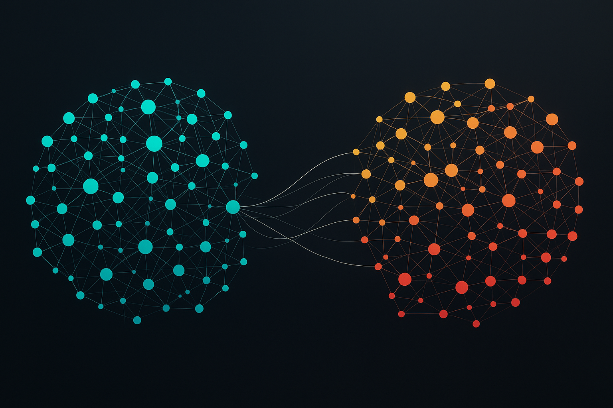

Projects
Most recent works at the intersection of AI and science
Domain Shifts Mitigation in Medical Cell Datasets

Can we distinguish between a malignant cancerous cell and a healthy cell based on their image?
Yes, but it is not easy.
In computational cytology, we often face two challenges:
• A limited amount of annotated data that prevents us from using large training cell datasets.
• Training and testing datasets coming from different sources (microscope, light, environment, etc.)
leading to poor generalisation and bad accuracies.
My task was to build and design a new pipeline that would allow us to overcome these challenges. For that, I used mathematical tools,
supervised and unsupervised machine learning methods to "re-align" datasets coming from different sources.
Aligning dataset spaces solves both problems at once: we can map the feature
representations of only a few annotated samples onto
another, potentially much larger, dataset and reliably scale up annotations.
This pipeline greatly improved generalization across data and
enhances cell classification results (between +20% and +50% improved accuracy depending on the dataset).
On top of that, I deployed the pipeline through a mini web app to help researchers run cell classification tasks.
CMI Sensors | Kaggle Competition
 A challenge proposed by the Child Mind Institute and
the Healthy Brain Network. The goal was to detect
repetitive gesture behaviors from time series sensor data
acquired by a wrist-worn device. These behaviors are
connected to obsessive-compulsive disorder (OCD), and
thus represent key indicators of mental health challenges.
A challenge proposed by the Child Mind Institute and
the Healthy Brain Network. The goal was to detect
repetitive gesture behaviors from time series sensor data
acquired by a wrist-worn device. These behaviors are
connected to obsessive-compulsive disorder (OCD), and
thus represent key indicators of mental health challenges.
I designed a 3-branch pipeline with PyTorch and attention mechanisms to classify gestures. After training, the model achieved an accuracy of 82.8%, placing me in the top 10% of the competition.
Results: 186th out of 2,657 teams
AI and Quantum Computing
 Is it possible to build a quantum computer with light?
Is it possible to build a quantum computer with light?
Yes.
Is it better than a classical computer?
In principle, yes!
But, there is a condition: light needs to have a very specific and fundamental property
to quantum physics called entanglement.
However it is very difficult, if not impossible, to detect it experimentally since it relies on data-hungry and computationally expensive methods.
The goal of the project was to develop a neural network pipeline to detect such fundamental property only from a few experimental data.
Indeed, entanglement can be witnessed from correlations patterns that experimentalists can observe from their measurements. And we know that neural networks are excellent at detecting correlations.
It was thus tempting to use a neural network to detect such fundamental property.
My role was to supervise the project and work together with a PhD student to develop the pipeline.
We obtained excellent and very promising results.
We were impressed by the performance of the neural network at this task reaching more than 95% of accuracy on the test dataset and only with four different measurements.
This is a strong milestone in the field of quantum computing and it was awarded by a publication in the prestigious journal Physical Review Letters.
Bringing Sport and AI Together
Can artificial intelligence help us write workout gym notes efficiently to easily track our progress?
This project started with a personal need. When I go to the gym, I need to take notes
to track my weights, my reps, my number of sets and my exercises. It is a must for anyone
who wants to track their progress and improve their performance. If you do not do it, you won't
progress simply because you cannot remember everything from one workout to the next.
However, taking notes can be time-consuming and I never found a good app that would help me do it efficiently.
If you download such apps, you will realize that you need to look for specific exercise
and enter all details (reps, weights, sets, ...) manually.
You cannot really do that when you are at the gym! I don't have time!
I just want to be able to write 'Bench press 100x10 4S' (understand: 'I did 4 sets of 10 reps at 100kg') and have it automatically
converted to a structured format to be able to track my progress.
This is what I did and I called my app FitBoard Training.
What does the app do?
Efficient Gym Notes converter
Using
Workout session tracker
Predictive models
Progress tracker
Real-time and
Want to try it?
This project is a work in progress.